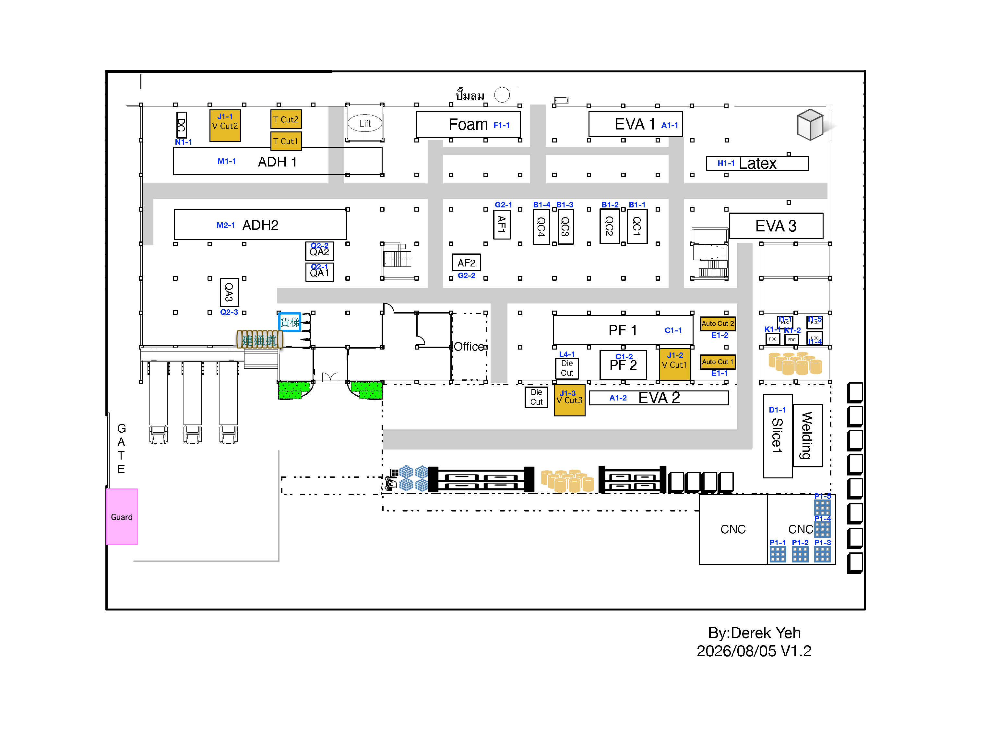

<!doctype html>
<html lang="zh-Hant">
<meta charset="utf-8">
<title>EPS geometry QA comparison</title>
<style>
  * { box-sizing: border-box; }
  body { margin: 0; background: #111827; color: white; font: 14px system-ui, sans-serif; }
  header { height: 44px; display: flex; align-items: center; justify-content: center; font-weight: 700; }
  main { display: grid; grid-template-columns: 1fr 1fr; gap: 8px; height: calc(100vh - 44px); padding: 0 8px 8px; }
  section { position: relative; overflow: hidden; background: white; border-radius: 6px; }
  h2 { position: absolute; z-index: 2; top: 8px; left: 8px; margin: 0; padding: 5px 9px; border-radius: 4px; background: rgba(17,24,39,.86); color: white; font-size: 12px; }
  img { width: 100%; height: 100%; object-fit: contain; }
  iframe { width: 1600px; height: 1000px; border: 0; transform: scale(.495); transform-origin: top left; }
</style>
<header>2026 Layout for AI.eps ↔ V2.6 interactive implementation</header>
<main>
  <section><h2>EPS vector source</h2></section>
  <section><h2>V2.6 implementation</h2><iframe src="http://127.0.0.1:4173/"></iframe></section>
</main>
</html>
